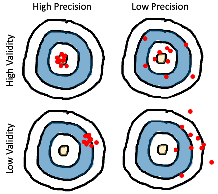

8 Measurement
- Discuss the reliability and validity of psychological measures
- Reason about tradeoffs between different measures and measure types
- Identify the characteristics of well-constructed survey questions
- Articulate risks of measurement flexibility and the costs and benefits of multiple measures
In the previous section of the book, we described a set of measurement-focused statistical techniques for quantifying (and maximizing) our precision. In this next set of three chapters focusing on planning experiments, we will develop our toolkit for designing the measures (this chapter), design manipulations (Chapter 9), and sampling (Chapter 10) strategies that will allow us to create and evaluate experiments. These chapters form a core part of our approach to “experimentology”: a set of decisions to reduce bias, maximize measurement precision, and assess generalizability. Let’s begin with measurement.
Throughout the history of science, advances in measurement have gone hand in hand with advances in knowledge.1 Telescopes revolutionized astronomy, microscopes revolutionized biology, and patch clamping revolutionized physiology. But measurement isn’t easy. Even the humble thermometer, allowing reliable measurement of temperature, required centuries of painstaking effort to perfect (Chang 2004). Psychology and the behavioral sciences are no different – we need reliable instruments to measure the things we care about. In this next section of the book, we’re going to discuss the challenges of measurement in psychology, and the properties that distinguish good instruments from bad.
What does it mean to measure something? Intuitively, we know that a ruler measures the quantity of length, and a scale measures the quantity of mass (Kisch 1965). As we discussed in Chapter 2, those quantities are latent (unobserved). Individual measurements, in contrast, are manifest: they are observable to us. What does it mean to measure a psychological construct – a hypothesized theoretical quantity inside the head?
We first have to keep in mind that not every measure is equally precise. This point is obvious when you think about physical measurement instruments: a caliper will give you a much more precise estimate of thickness than a ruler will. One way to see that the measurement is more precise is by repeating it a bunch of times. The measurements from the caliper will likely be more similar to one another, reflecting the fact that the amount of error in each individual measurement is smaller. We can do the same thing with a psychological measurement – repeat and assess variation – though as we’ll see below it’s a little trickier. Measurement instruments that have less error are called more reliable instruments.2
2 Is reliability the same as precision? Yes, more or less. Confusingly, different fields call these concepts different things (there’s a helpful table of these names in Brandmaier et al. 2018). Here we’ll talk about reliability as a property of instruments specifically while using the term precision to talk about the measurements themselves.
Second, psychological measurements do not directly reflect latent theoretical constructs of interest, quantities like happiness, intelligence, or language processing ability. And unlike quantities like length and mass, there is often disagreement in psychology about what the right theoretical quantities are. Thus, we have to measure an observable behavior – our operationalization of the construct – and then make an argument about how the measure relates to a proposed construct of interest (and sometimes whether the construct really exists at all!). This argument is about the validity of our measurements.3
3 We are also going to talk in Chapter 9 about the validity of manipulations. The way you identify a causal effect on some measure is by operationalizing some construct as well. To identify causal effects, we must link a particular construct of interest to something we can concretely manipulate in an experiment, like the stimuli or instructions.
These two concepts, reliability and validity, provide a conceptual toolkit for assessing a psychological measurement and how well it serves the researcher’s goal.
8.1 Reliability
Reliability is a way of describing the extent to which a measure yields signal relative to noise. Intuitively, if there’s less noise, then there will be more similarity between different measurements of the same quantity, illustrated in Figure 8.1 as a tighter grouping of points on the bulls-eye. But how do we measure signal and noise?

A reliable and valid measure of children’s vocabulary
Anyone who has worked with little children, or had children of their own, can attest to how variable their early language is. Some children speak clearly and produce long sentences from an early age, while others struggle; this variation appears to be linked to later school outcomes (Marchman and Fernald 2008). Thus, there are many reasons why you’d want to make precise measurements of children’s early language ability as a latent construct of interest.
Because bringing children into a lab can be expensive, one popular alternative option for measuring child language is the MacArthur Bates Communicative Development Inventory (CDI for short), a form which asks parents to mark words that their child says or understands. CDI forms are basically long checklists of words. But is parent report a reliable or valid measure of children’s early language?

As we’ll see below, one way to measure the reliability of the CDI to compute the correlation between two different administrations of the form for the same child. Unfortunately, this analysis has one issue: the longer you wait between observations the more the child has changed! Figure 8.2 displays these correlations for two CDIs, showing how correlations start off high and drop off as the gap between observations increases (Frank et al. 2021).
Given that CDI forms are relatively reliable instruments, are they valid? That is, do they really measure the construct of interest, namely children’s early language ability? Bornstein and Haynes (1998) collected many different measures of children’s language – including the ELI (an early CDI form) and other “gold standard” measures like transcribed samples of children’s speech. CDI scores were highly correlated with all the different measures, suggesting that the CDI was a valid measure of the construct.
The combination of reliability and validity evidence suggests that CDIs are a useful (and relatively inexpensive source) of data about children’s early language, and indeed they have become one of the most common assessments for this age group!
8.1.1 Measurement scales

In the physical sciences, it’s common to measure the precision of an instrument using its coefficient of variation (Brandmaier et al. 2018): \[CV = \frac{\sigma_w}{\mu_w}\] where \(\sigma_w\) is the standard deviation of the measurements within an individual and \(\mu_w\) is the mean of those measurements (Figure 8.3).
Imagine we measure the height of a person five times, resulting in measurements of 171cm, 172cm, 171cm, 173cm, and 172cm. These are the combination of the person’s true height (we assume they have one!) and some measurement error. Now we can use these measurements to compute the coefficient of variation, which is 0.005, suggesting very limited variability relative to the overall quantity being measured. Why can’t we just do this same thing with psychological measurements?
Thinking about this question takes us on a detour through the different kinds of measurement scales used in psychological research (Stevens 1946). The height measurements in our example are on what is known as a ratio scale: a scale in which numerical measurements are equally spaced and on which there is a true zero point. These scales are common for physical quantities but somewhat less frequent in psychology (with reaction times as a notable exception). More common are interval scales, in which there is no true zero point. For example, IQ (and other standardized scores) are intended to capture interval variation on some dimension but 0 is meaningless – an IQ of 0 does not correspond to any particular interpretation.
Ordinal scales are also often used. These are scales that are ordered but are not necessarily spaced equally. For example, levels of educational achievement (“Elementary”, “High school”, “Some college”, “College”, “Graduate school”) are ordered, but there is no sense in which “High school” is as far from “Elementary” as “Graduate school” is from “College.” The last type in Stevens’ hierarchy is nominal scales, in which no ordering is possible either. For example, race is an unordered scale in which multiple categories are present but there is no inherent ordering of these categories. The hierarchy is shown in Table 8.1.
| Scale | Definition | Operations | Statistics |
|---|---|---|---|
| Nominal | Unordered list | Equality | Mode |
| Ordinal | Ordered list | Greater than or less than | Median |
| Interval | Numerical | Equality of intervals | Mean, SD |
| Ratio | Numerical & zero. | Equality of ratios | Coefficient of variation |
Critically, different summary measures work for each scale type. If you have an unordered list like a list of options for a question about race on a survey, you can present the modal response (the most likely one). It doesn’t even make sense to think about what the median was – there’s no ordering! For ordered levels of education, a median is possible but you can’t compute a mean. And for interval variables like “number of correct answers on a math test” you can compute a mean and a standard deviation.4
4 You might be tempted to think that “number of correct answers” is a ratio variable – but is zero really meaningful? Does it truly correspond to “no math knowledge” or is it just a stand-in for “less math knowledge than this test requires”?
Now we’re ready to answer our initial question about why we can’t quantify reliability using the coefficient of variation. Unless you have a ratio scale with a true zero, you can’t compute a coefficient of variation. Think about it for IQ scores: currently, by convention, standardized IQ scores are set to have a mean of 100. If we tested someone multiple times and found the standard deviation of their test scores was 4 points, then we could estimate the precision of their measurements as “CV” of 4/100 = .04. But since IQ of 0 isn’t meaningful, we could just set the mean IQ for the population to 200. Our test would be the same, and so the CV would be 4/200 = .02. On that logic we just doubled the precision of our measurements by rescaling the test! That doesn’t make any sense.
Early controversies over psychological measurement
“Psychology cannot attain the certainty and exactness of the physical sciences, unless it rests on a foundation of […] measurement” (Cattel 1890).
It is no coincidence that the founders of experimental psychology were obsessed with measurement (Heidelberger 2004). It was viewed as the primary obstacle facing psychology on its road to becoming a legitimate quantitative science. For example, one of the final pieces written by Hermann von Helmholtz (Wilhelm Wundt’s doctoral advisor), was a 1887 philosophical treatise entitled “Zahlen und Messen” (“Counting and Measuring,” see Darrigol 2003). In the same year, Fechner (1987) explicitly grappled with the foundations of measurement in “Uber die psychischen Massprincipien” (“On Psychic Measurement Principles”).
Many of the early debates over measurement revolved around the emerging area of psychophysics, the problem of relating objective, physical stimuli (e.g. light, sound, pressure) to the subjective sensations they produce in the mind. For example, Fechner (1860) was interested in a quantity called the “just noticeable difference”, the smallest change in a stimulus that can be discriminated by our senses. He argued for a lawful (logarithmic) relationship: a logarithmic change in the intensity of, say, brightness corresponded to a linear change in the intensity people reported (up to some constant). In other words, sensation was measurable via instruments like just noticeable difference.
It may be surprising to modern ears that the basic claim of measurability was controversial, even if the precise form of the psychophysical function would continue to be debated. But this claim led to a deeply rancorous debate, culminating with the so-called Ferguson Committee, formed by the British Association for the Advancement of Science in 1932 to investigate whether such psychophysical procedures could count as quantitative ‘measurements’ of anything at all (Moscati 2018). It was unable to reach a conclusion, with physicists and psychologists deadlocked:
Having found that individual sensations have an order, they [some psychologists] assume that they are measurable. Having travestied physical measurement in order to justify that assumption, they assume that their sensation intensities will be related to stimuli by numerical laws […] which, if they mean anything, are certainly false. (Ferguson and Tucker 1940)
The heart of the disagreement was rooted in the classical definition of quantity requiring strictly additive structure. An attribute was only considered measurable in light of a meaningful concatenation operation. For example, weight was a measurable attribute because putting a bag of three rocks on a scale yields the same number as putting each of the three rocks on separate scales and then summing up those numbers (in philosophy of science, attributes with this concatenation property are known as “extensive” attributes, as opposed to “intensive” ones). Norman Campbell, one of the most prominent members of the Ferguson Committee, had recently defined fundamental measurement in this way (e.g., Campbell 1928), contrasting it with derived measurement, which involved computing some function based on one or more fundamental measures. According to the physicists on the Ferguson Committee, measuring mental sensations was impossible because they could never be grounded in any fundamental scale with this kind of additive operation. It just didn’t make sense to break up people’s sensations into parts the way we would weights or lengths: they didn’t come in “amounts” or “quantities” that could be combined (Cattell 1962). Even the intuitive additive logic of Donders (1868/1969)’s “method of subtraction” for measuring the speed of mental processes was viewed skeptically on the same grounds by the time of the committee (e.g., in an early textbook, Woodworth (1938) claimed “we cannot break up the reaction into successive acts and obtain the time for each act.”)
The primary target of the Ferguson Committee’s investigation was the psychologist S. S. Stevens, who had claimed to measure the sensation of loudness using psychophysical instruments. Exiled from classical frameworks of measurement, he went about developing an alternative “operational” framework (Stevens 1946), where the classical ratio scale recognized by physicists was only one of several ways of assigning numbers to things (see Table 8.1 above). Stevens’ framework quickly spread, leading to an explosion of proposed measures. However, operationalism remains controversial outside psychology (Michell 1999). The most extreme version of Steven’s stance (“measurement is the assignment of numerals to objects or events according to rule”) permits researchers to define constructs operationally in terms of a measure (Hardcastle 1995). For example, one may say that the construct of intelligence is simply whatever it is that IQ measures. It is then left up to the researcher to decide which scale type their proposed measure should belong to.
In Chapter 2, we outlined a somewhat different view, closer to a kind of constructive realism (Giere 2004; Putnam 2000). Psychological constructs like happiness are taken to exist independent of any given operationalization, putting us on firmer ground to debate the pros and cons associated with different ways of measuring the same construct. In other words, we are not free to assign numbers however we like. Whether a particular construct or quantity is measurable on a particular scale should be treated as an empirical question.
The next major breakthrough in measurement theory emerged with the birth of mathematical psychology in the 1960s, which aimed to put psychological measurement on more rigorous foundations. This effort culminated in the three-volume Foundations of Measurement series (Krantz et al. 1971; Suppes et al. 1989; Robert Duncan Luce et al. 1990), which has become the canonical text for every psychology student seeking to understand measurement in the non-physical sciences. One of the key breakthroughs was to shift the burden from measuring (additive) constructs themselves to measuring (additive) effects of constructs in conjunction with one another:
When no natural concatenation operation exists, one should try to discover a way to measure factors and responses such that the ‘effects’ of different factors are additive. (R. Duncan Luce and Tukey 1964).
This modern viewpoint broadly informs the view we describe here.
8.1.2 Measuring reliability
So then how do we measure signal and noise when we don’t have a true zero? We can still look at the variation between repeated measurement, but rather than comparing that variation between measurements to the mean, we can compare it to some other kind of variation, for example, variation between people. In what follows, we’ll discuss reliability on interval scales, but many of the same tools have been developed for ordinal and nominal scales.
Imagine that you are developing an instrument to measure some cognitive ability. We assume that every participant has a true ability, \(t\), just the same way that they have a true height in the example above. Every time we measure this true ability with our instrument, however, it gets messed up by some measurement error. Let’s specify that error is normally distributed with a mean of zero – so it doesn’t bias the measurements, it just adds noise. The result is our observed score, \(o\).5
5 The approach we use to introduce this set of ideas is called classical test theory. There are other – more modern – alternative approaches, but CTT (as it’s called) is a good starting point for thinking through the concepts.
Taking this approach, we could define a relative version of the coefficient of variation. The idea is that the reliability of a measurement is the amount of variance attributable to the true score variance (signal), rather than the observed score variance (which includes noise). If \(\sigma^2_t\) is the variance of the true scores and \(\sigma^2_o\) is the variance of the observed scores, then this ratio is: \[ R = \frac{\sigma^2_t}{\sigma^2_o}. \] When noise is high, then the denominator is going to be big and \(R\) will go down to 0; when noise is low, the numerator and the denominator will be almost the same and \(R\) will approach 1.
This all sounds great, except for one problem: we can’t compute reliability using this formula without knowing the true scores and their variance. But if we did, we wouldn’t need to measure anything at all!
There are two main approaches to computing reliability from data. Each of them makes an assumption that lets you circumvent the fundamental issue that we only have access to observed scores and not true scores. Let’s think these through in the context of a math test.
Test-retest reliability. Imagine you have two parallel versions of your math test that are the same difficulty. Hence, you think a student’s score on either one will reflect the same true score, modulo some noise. In that case, you can use these two sets of observed scores (\(o_1\) and \(o_2\)) to compute the reliability of the instrument by simply computing the correlation between them (\(\rho_{o_1, o_2}\)). The logic is that, if both variants reflect the same true score, then the shared variance (covariance in the sense of Chapter 5) between them is just \(\sigma^2_t\), the true score variance, which is the variable that we wanted but didn’t have. Test-retest reliability is thus a very convenient way to measure reliability (Figure 8.4).

Internal reliability. If you don’t have two parallel versions of the test, or you can’t give the test twice for whatever reason, then you have another option. Assuming you have multiple questions on your math test (which is a good idea!), then you can split the test in pieces and treat the scores from each of these sub-parts as parallel versions. The simplest way to do this is to split the instrument in half and compute the correlation between participants’ scores on the two halves – this quantity is called split half reliability.6
6 The problem is that each half is… half as long as the original instrument. To get around this, there is a correction called the Spearman-Brown correction that can be applied to estimate the expected correlation for the full-length instrument. You also want to make sure that the test doesn’t get harder from the beginning to the end. If it does, you may want to use the even-numbered and odd-numbered questions as the two parallel versions.
Another method for computing the internal reliability (the consistency of a test) is to treat each test item as a sub-instrument and compute the average split-half correlation over all splits. This method yields the statistic Cronbach’s \(\alpha\) (“alpha”). \(\alpha\) is a widely reported statistic, but it is also widely misinterpreted (Sijtsma 2009). First, it is actually a lower bound on reliability rather than a good estimate of reliability itself. And second, it is often misinterpreted as evidence that an instrument yields scores that are “internally consistent,” which it does not; it’s not an accurate summary of dimensionality. \(\alpha\) is a standard statistic, but it should be used with caution.
One final note: these tools often get used for observers’ ratings of the same stimulus (inter-rater or inter-annotator reliability), say for example when you have two coders rate how aggressive a person seems in a video. The most common measure of inter-annotator agreement is a categorical measure called Cohen’s \(\kappa\) (“kappa”), for categorical agreement, but you can use intra-class correlation coefficients (see Depth box below) for continuous data as well as many other measures.
Reliability paradoxes!
There’s a major issue with calculating reliabilities using the approaches we described here: because reliability is defined as a ratio of two measures of variation, it will always be relative to the variation in the sample. So if a sample has less variability, reliability will decrease!
One way to define reliability formally is by using the intra-class correlation coefficient (ICC): \[ICC = \frac{\sigma^2_b}{\sigma^2_w + \sigma^2_b}\] where \(\sigma^2_w\) is the within-subject variance in measurements and \(\sigma^2_b\) is the between-subject variance in the measurements. (The denominator of the ICC comes from partitioning the total observed variance \(\sigma^2_o\) in the reliability formula above).
So now instead of comparing variation to the mean, we’re comparing variation on one dimension (between person) to total variation (within and between person). ICCs are tricky and there are several different flavors available depending on the structure of your data and what you’re trying to do with them. McGraw and Wong (1996) and Gwet (2014) provide extensive guidance on how to compute and interpret this statistic in different situations.
Let’s think about the CDI data in our case study, which showed high reliability. Now imagine we restricted our sample to only change scores between 16 – 18-month-olds (our prior sample had 16 – 30-month-olds). Within this more restricted subset, overall vocabularies would be lower and more similar to one another, and so the average amount of change within a child (\(\sigma_w\)) would be larger relative to the differences between children (\(\sigma_b\)). That would make our reliability go down, even though we would be computing it on a subset of the exact same data.
That doesn’t sound so bad. But we can construct a much more worrisome version of the same problem. Say we are very sloppy in our administration of the CDI and create lots of between-participants variability, perhaps by giving different instructions to different families. This practice will actually increase our estimate of split-half reliability (by increasing \(\sigma_b\)). While the within-participant variability will remain the same, the between-participant variability will go up! You could call this a “reliability paradox” – sloppier data collection can actually lead to higher reliabilities.
We need to be sensitive to the sources of variability we’re quantifying reliability over – both the numerator and the denominator. If we’re computing split-half reliabilities, typically we’re looking at variability across test questions (from some question bank) vs. across individuals (from some population). Both of these sampling decisions affect reliability – if the population is more variable or the questions are less variable, we’ll get higher reliability. In sum, reliability is relative: reliability measures depend on the circumstances in which they are computed.
8.1.3 Practical advice for computing reliability
If you don’t know the reliability of your measures for an experiment, you risk wasting your and your participants’ time. Ignorance is not bliss. A higher reliability measure will lead to more precise measurements of a causal effect of interest and hence smaller required sample sizes.
Test-retest reliability is generally the most conservative practical measure of reliability. Test-retest estimates include not only measurement error but also participants’ state variation across different testing sessions and variance due to differences between versions of your instrument. These real-world quantities are absent from internal reliability estimates, which may make you erroneously think that there is more signal present in your instrument than there is.7 It’s hard work to measure test-retest reliability estimates, in part because you need two different versions of a test (to avoid memory effects). If you plan on using an instrument more than once or twice, though, it will likely be worthwhile!
7 Even though \(\alpha\) is a theoretical lower bound on reliability, in practice, test-retest accuracy often ends up lower than \(\alpha\) because it incorporates all these other sources of variation.
Finally, if you have multiple measurement items as part of your instrument, make sure you evaluate how they contribute to the reliability of the instrument. Perhaps you have several questions in a survey that you’d like to use to measure the same construct; perhaps multiple experimental vignettes that vary in content or difficulty. Some of these items may not contribute to your instrument’s reliability – and some may even detract. At a bare minimum, you should always visualize the distribution of responses across items to scan for floor and ceiling effects – when items always yield responses bunched at the bottom or top of the scale, limiting their usefulness – and take a look at whether there are particular items on which items do not relate to the others.
If you are thinking about developing an instrument that you use repeatedly, it may be useful to use more sophisticated psychometric models to estimate the dimensionality of responses on your instrument as well as the properties of the individual items. If your items have binary answers, like test questions, then item response theory is a good place to start (Embretson and Reise 2013). If your items are more like ratings on a continuous (interval or ratio) scale, then you may want to look at factor analysis and related methods (Furr 2021).
Wasted effort
Low-reliability measures limit your ability to detect correlations between measurements. Mike spent several fruitless months in graduate school running dozens of participants through batteries of language processing tasks and correlating the results across tasks. Every time data collection finished, one or the other (spurious) correlation would show up in the data analysis. Something was always correlated with something else. Thankfully, he would always attempt to replicate the correlation in a new sample – and in that next dataset, the correlation we were trying to replicate would be null but another (again likely spurious) correlation would show up.
This exercise was a waste of time because most of the tasks were of such low reliability that, even had they been highly correlated with one another, relationship would have been almost impossible to detect without a huge sample size. (It also would have been helpful if someone had mentioned multiplicity corrections (Chapter 6) to him.)
One rule of thumb that’s helpful for individual difference designs of this sort is that the maximal correlation that can be observed between two variables \(x\) and \(y\) is the square root of the product of their reliabilities: \(\sqrt{r_x r_y}\) . So if you have two measures that are reliable at .25, the maximal measured correlation between them is .25 as well! This kind of method is now frequently used in cognitive neuroscience (and other fields as well) to compute the so-called noise ceiling for a measure: the maximum amount of signal that in principle could be predicted (Lage-Castellanos et al. 2019). If your sample size is too small to detect correlations at the noise ceiling (see Chapter 10), then the study is not worth doing.
8.2 Validity
In Chapter 2, we talked about the process of theory building as a process of describing the relationships between constructs. But for the theory to be tested, the constructs must be measured so that you can test the relationships between them! Measurement and measure construction is therefore intimately related to theory construction, and the notion of validity is central.8
8 Some authors have treated “validity” as a broader notion that can include, for example, statistical issues (Shadish, Cook, and Campbell 2002). The sense of validity that we are interested in here is a bit more specific. We focus on construct validity, the relationship between the measure and the construct.
A valid instrument measures the construct of interest. In Figure 8.1, invalidity is pictured as bias – the holes in the target are tightly grouped but in the wrong place.9 How can you tell if a measure is valid, given that the construct of interest is unobserved? There is no single test of the validity of a measure (Cronbach and Meehl 1955). Rather, the measure is valid if there is evidence that fits into the broader theory as it relates to the specific construct it is supposed to be measuring. For example, it should be strongly related to other measures of the construct, but not as related to measures of different constructs.
9 This metaphor is a good rough guide but it doesn’t distinguish an instrument that is systematically biased (for example, by estimating scores too low for one group) and one that is invalid (because it measures the wrong construct).
How do you establish that a measure fits into the broader theory? Validity of a measure is typically established via an argument that calls on different sources of support (Kane 1992). Here are some of the ways that you might support the relationship between a measure and a construct:
- Face validity: The measure looks like the construct, such that intuitively it is reasonable that it measures the construct. Face validity is a relatively weak source of evidence for validity, since it relies primarily on pre-theoretic intuitions rather than any quantitative assessment. For example, reaction time is typically correlated with intelligence test results (e.g., Jensen and Munro 1979), but does not appear to be a face-valid measure of intelligence in that simply being fast doesn’t accord with our intuition about what it means to be intelligent!
- Ecological validity: The measure relates to the context of people’s lives. For example, a rating of a child’s behavioral self-control in the classroom is a more ecologically valid measure of executive function than a reaction-time task administered in a lab context. Ecological validity arguments can be made on the basis of the experimental task, the stimuli, and the general setting of the experiment (Schmuckler 2001). Researchers differ in how much weight they assign to ecological validity based on their goals and their theoretical orientation.
- Internal validity: Usually used negatively. A “challenge to internal validity” is a description of a case where the measure is administered in such a way as to weaken the relationship between measure and construct. For example, if later items on a math test showed lower performance due to test-taker’s fatigue rather than lower knowledge of the concepts, the test might have an internal validity issue.10
- Convergent validity: The classic strategy for showing validity is to show that a measure relates (usually, correlates) with other putative measures of the same construct. When these relationships are measured concurrently, this is sometimes called concurrent validity. As we mentioned in Chapter 2, self-reports of happiness relate to independent ratings by friends and family, suggesting that both measure the same underlying construct (Sandvik, Diener, and Seidlitz 1993).11
- Predictive validity. If the measure predicts other later measures of the construct, or related outcomes that might be of broader significance. Predictive validity is often used in lifespan and developmental studies where it is particularly prized for a measure to be able to predict meaningful life outcomes such as educational success in the future. For example, classroom self-control ratings (among other measures) appear strongly predictive of later life health and wealth outcomes (Moffitt et al. 2011).
- Divergent validity. If the measure can be shown to be distinct from measure(s) of a different construct, this evidence can help establish that the measure is specifically linked to the target construct. For example, measures of happiness (specifically, life satisfaction) can be distinguished from measures of optimism as well as both positive and negative affect, suggesting that these are distinct constructs (Lucas, Diener, and Suh 1996).
10 Often this concept is described as being relevant to the validity of a manipulation also, e.g. when the manipulation of the construct is confounded and some other psychological variable is manipulated as well. We discuss internal validity further in Chapter 9.
11 This idea of convergent validity relates to the idea of holism we described in Chapter 2. A measure is valid if it relates to other valid measures, which themselves are only valid if the first one is! The measures are valid because the theory works, and the theory works because the measures are valid. This circularity is a difficult but perhaps unavoidable part of constructing psychological theories (see the above Depth Box on the history of measurement). We don’t ever have an objective starting point for the study of the human mind.
8.2.1 Validity arguments in practice
Let’s take a look at how we might make an argument about the validity of the CDI, the vocabulary instrument that we used for our case study.
First, the CDI is face valid – it is clearly about early language ability. In contrast, even though a child’s height would likely be correlated with their early language ability, we should be skeptical of this measure due to its lack of face validity. In addition, the CDI shows good convergent and predictive validity. Concurrently, the CDI correlates well with evidence from transcripts of children’s actual speech and from standardized language assessments (as discussed in the case study above). And predictively, CDI scores at age 2 relate to reading scores during elementary school (Marchman and Fernald 2008).
On the other hand, users of the CDI must avoid challenges to the internal validity of the data they collect. For example, some CDI data are compromised by confusing instructions or poor data collection processes (Frank et al. 2021). Further, advocates and critics of the CDI argue about its ecological validity. There is something quite ecologically valid about asking parents and caregivers – who are experts on their own child – to report on their child’s abilities. On the other hand, the actual experience of filling out a structured form estimating language ability might be more familiar to some families from high education backgrounds than it would be for others from lower education backgrounds. Thus, a critic could reasonably say that comparisons of CDI scores across socioeconomic strata would be an invalid usage (Feldman et al. 2000).
8.2.2 Avoid questionable measurement practices!
Experimentalists sometimes have a tendency to make up ad hoc measures on the fly. It’s fine to invent new measures, but the next step is to think about what evidence there is that it’s valid! Table 8.2 gives a set of questions to guide thoughtful reporting of measurement practices (adapted from Flake and Fried 2020).
| Question | Information to Report |
|---|---|
| What is your construct? | Define construct, describe theory and research. |
| What measure did you use to operationalize your construct? | Describe measure and justify operationalization. |
| Did you select your measure from the literature or create it from scratch? | Justify measure selection and review evidence on reliability and validity (or disclose the lack of such evidence). |
| Did you modify your measure during the process? | Describe and justify any modifications; note whether they occurred before or after data collection. |
| How did you quantify your measure? | Describe decisions underlying the calculation of scores on the measure; note whether these were established before or after data collection and whether they are based on standards from previous literature. |
One big issue to be careful about is that researchers have been known to modify their scales and their scale scoring practices (say, omitting items from a survey or rescaling responses) after data collection. This kind of post-hoc alteration of the measurement instrument can sometimes be justified by features of the data, but it can also look a lot like \(p\)-hacking! If researchers modify their measurement strategy after seeing their data, this decision needs to be disclosed, and it may undermine their statistical inferences.
Talk about flexible measurement!
The Competitive Reaction Time Task (CRTT) is a lab-based measure of aggression. Participants are told that they are playing a reaction-time game against another player and are asked to set the parameters of a noise blast that will be played to their opponent. Unfortunately, in an analysis of the literature using CRTT, Elson et al. (2014) found that different papers using the CRTT use dramatically different methods for scoring the task. Sometimes the analysis focused on the volume of the noise blast and sometimes it focused on the duration. Sometimes these scores were transformed (via logarithms) or thresholded. Sometimes they were combined into a single score. Elson was so worried by this flexibility, he created a website, https://flexiblemeasures.com, to document the variation he observed.
As of 2016, Elson had found 130 papers using the CRTT. And across these papers, he documented an astonishing 157 quantification strategies. One paper reported ten different strategies for extracting numbers from this measure! More worrisome still, Elson and colleagues found that when they tried out some of these strategies on their own data, different strategies led to very different effect sizes and levels of statistical significance. They could effectively make a finding appear bigger or smaller depending on which scoring they chose.
Triangulating a construct through multiple pre-specified measurements can be a good thing. But the issue with the CRTT analysis was that changes in the measurement strategy appeared to be made in a post hoc, data-driven way so as to maximize the significance of the experimental manipulation (just like the p-hacking we discussed in Chapters 3 and 6).
This examination of the use of the CRTT measure has several implications. First, and most troublingly, there may have been undisclosed flexibility in the analysis of CRTT data across the literature, with investigators taking advantage of the lack of standardization to try many different analysis variants and report the one most favorable to their own hypothesis. Second, it is unknown which quantification of CRTT behavior is in fact most reliable and valid. Since some of these variants are presumably better than others, researchers are effectively “leaving money on the table” by using suboptimal quantifications. As a consequence, if researchers adopt the CRTT, they find much less guidance from the literature on what quantification to adopt.
8.3 How to select a good measure?
Ideally you want a measure that is reliable and valid. How do you get one? An important first principle is to use a pre-existing measure. Perhaps someone else has done the hard work of compiling evidence on reliability and validity, and in that case you will most likely want to piggyback on that work. Standardized measures are typically broad in their application and so the tendency can be to discard these because they are not tailored for our studies specifically. But the benefits of a standardized measure are substantial. Not only can you justify the measure using the prior literature, you also have an important index of population variability by comparing absolute scores to other reports.12
12 Comparing absolute measurements is a really important trick for “sanity-checking” your data. If your measurements are very different than the ones in the paper you’re following up (for example, if reaction times are much longer or shorter, or if accuracies on a test are much higher or lower), that may be a signal that something has gone wrong.
If you don’t use someone else’s measure, you’ll need to make one up yourself. Most experimenters go down this route at some point, but if you do, remember that you will need to figure out how to estimate its reliability and also how to make an argument for its validity!
We can assign numbers to almost anything people do. We could run an experiment on children’s exploratory play and count the number of times they interact with another child (Ross and Lollis 1989), or run an experiment on aggression where we quantify the amount of hot sauce participants serve (Lieberman et al. 1999). Yet most of the time we choose from a relatively small set of operational variables: asking survey questions, collecting choices and reaction times, and measuring physiological variables like eye-movements. Besides following these conventions, how do we choose the right measurement type for a particular experiment?
There’s no hard and fast rule about what aspect of behavior to measure, but here we will focus on two dimensions that can help us organize the broad space of possible measure targets.13 The first of these is the continuum between simple and complex behaviors. The second is the focus on explicit, voluntary behaviors vs. implicit or involuntary behaviors.
13 Some authors differentiate between “self-report” and “observational” measures. This distinction seems simple on its face, but actually gets kind of complicated. Is a facial expression a “self-report”? Language is not the only way that people communicate with one another – many actions are intended to be communicative (Shafto, Goodman, and Frank 2012).
8.3.1 Simple vs. complex behaviors

Figure 8.5 shows a continuum between simple and complex behaviors. The simplest measurable behaviors tend to be button presses, for example:
- pressing a key to advance to the next word in a word-by-word self-paced reading study,
- selecting “yes” or “no” in a lexical decision task, and
- making a forced choice between different alternatives to indicate which has been seen before.
These specific measures – and many more like them – are the bread and butter of many cognitive psychology studies. Because they are quick and easy to explain, these tasks can be repeated over many trials. They can also be executed with a wider variety of populations including with young children and sometimes even with non-human animals with appropriate adaptation. (A further benefit of these paradigms is that they can yield useful reaction time data, which we discuss further below).
In contrast, a huge range of complex behaviors have been studied by psychologists, including:
- open-ended verbal interviews;
- written expression, e.g. via handwriting or writing style;
- body movements, including gestures, walking, or dance; and
- drawing or artifact building.
There are many reasons to study these kinds of behaviors. First, the behaviors themselves may be examples of tasks of interest (e.g., studies of drawing that seek to understand the origins of artistic expression). Or, the behavior may stand in for other even more complex behaviors of interest, as in studies of typing that use this behavior as a proxy for lexical knowledge (Rumelhart and Norman 1982).
Complex behaviors typically afford a huge variety of different measurement strategies. So any experiment that uses a particular measurement of a complex behavior will typically need to do significant work up front to justify the choice of that measurement strategy – e.g., how to quantify dances or gestures or typing errors – and provide some assurance about its reliability. Further, it is often much more difficult to have a participant repeat a complex behavior many times under the same conditions. Imagine asking someone to draw hundreds of sketches as opposed to pressing a key hundreds of times! Thus, the choice of a complex behavior is often a choice to forego a large number of simple trials for a small number of more complex trials.
Complex behaviors can be especially useful to study either at the beginning or the end of a set of experiments. At the beginning of a set of experiments, they can provide inspiration about the richness of the target behavior and insight into the many factors that influence it. And at the end of a set of experiments, they can provide an ecologically valid measure to complement a reliable but more artificial, lab-based behavior.
The more complex the behavior, however, the more it will vary across individuals and the more environmental and situational factors will affect it. These can be important parts of the phenomenon, but they can also be nuisances that are difficult to get under experimental control.14 Simple measures are typically easier to use and hence easier to deploy repeatedly in a set of experiments where you iterate your manipulation to test a causal theory.
14 When they are not designed with care, complex, open-ended behaviors such as verbal interviews can be especially affected by the experimental biases that we will describe in Chapter 9, including for example demand characteristics, in which participants say what they think experimenters want to hear. Qualitative interview methods can be incredibly powerful as a method in their own right, but they should be deployed with care as measures for an experimental intervention.
8.3.2 Implicit vs. explicit behaviors
A second important dimension of organization for measures is the difference between implicit and explicit measures. An explicit measure provides a measurement of a behavior that a participant has conscious awareness of – for example, the answer to a question. In contrast, implicit measures provide measurements of psychological processes that participants are unable to report (or occasionally, unwilling to).15 Implicit measures, especially reaction time, have long been argued to reflect internal psychological processes (Donders 1868/1969). They also have been proposed as measures of qualities such as racial bias that participants may have motivation not to disclose (Greenwald, McGhee, and Schwartz 1998). There are also of course a host of physiological measurements available. Some of these measure eye-movements, heart rate, or skin conductance, which can be linked to aspects of cognitive process. Others reflect underlying brain activity via the signals associated with MRI, MEG, NIRS, and EEG measurements. These methods are outside the scope of this book, though we note that the measurement concerns we discuss here definitely apply (e.g., Zuo, Xu, and Milham 2019).
15 Implicit/explicit is likely more of a continuum, but one cut-point is whether the participants’ behavior is considered intentional: that is, participants intend to press a key to register a decision, but they likely do not intend to react in 300 as opposed to 350 milliseconds due to having seen a prime.
Many tasks produce both accuracy and reaction time data. Often these trade off with one another in a classic speed-accuracy tradeoff: the faster participants respond, the less accurate they are. For example, to investigate racial bias in policing, Payne (2001) showed US college students a series of pictures of tools and guns, proceeded by a prime of either a White face or a Black face. In a first study, participants were faster to identify weapons when primed by a Black face but had similar accuracies. A second study added a response deadline to speed up judgments: this manipulation resulted in equal reaction times across conditions but greater errors in weapon identification after Black prime faces. These studies likely revealed the same phenomenon – some sort of bias to associate Black faces with weapons – but the design of the task moved participants along a speed accuracy tradeoff, yielding effects on different measures.16
16 One way of describing the information processing underlying this tradeoff is given by drift diffusion models, which allow joint analysis of accuracy and reaction time (Voss, Nagler, and Lerche 2013). Used appropriately, drift diffusion models can provide a way to remove speed-accuracy tradeoffs and extract more reliable signals from tasks where accuracy and reaction time are both measured (see Johnson et al. 2017 for an example of DDM on a weapon-decision task).
Simple, explicit behaviors are often a good starting point. Work using these measures – often the least ecologically valid – can then be enriched with implicit measures or measurements of more complex behaviors.
Survey measures
Sometimes the easiest way to elicit information from participants is simply to ask. Survey questions are an important part of experimental measurement, so we’ll share a few best practices, primarily derived from Krosnick and Presser (2010).
Treat survey questions as a conversation. The easier your items are to understand, the better. Don’t repeat variations on the same question unless you want different answers! Try to make the order reasonable, for example by grouping together questions about the same topic and moving from more general to more specific questions. The more you include “tricky” items the more you invite tricky answers to straightforward questions. One specific kind of tricky questions are “check” questions that evaluate participant compliance. We’ll talk more in Chapter 12 about various ways of evaluating compliance and their strengths and weaknesses.
Open-ended survey questions can be quite rich and informative, especially when an appropriate coding (classification) scheme is developed in advance and responses are categorized into a relatively small number of types. On the other hand, they present practical obstacles because they require coding (often by multiple coders to ensure reliability of the coding). Further, they tend to yield nominal data, which are often less useful for quantitative theorizing. Open-ended questions are a useful tool to add nuance and color to the interpretation of an experiment.
One common mistake that survey developers make is trying to put too much into one question. Imagine asking a restaurant-goer for a numerical ranking on the question, “How do you like our food and service?” What if they loved the food but hated the service, or vice versa – would they choose an intermediate option? Items that ask about more than one thing at once are known as double-barreled questions. They can confuse and frustrate participants as well as leading to uninterpretable data.

Especially given their ubiquity in commercial survey research, Likert scales – scales with a fixed number of ordered, numerical response options – are a simple and conventional way of gathering data on attitude and judgment questions (Figure 8.6). Bipolar scales are those in which the endpoints represent opposites, for example the continuum between “strongly dislike” and “strongly like.” Unipolar scales have one neutral endpoint, like the continuum between “no pain” and “very intense pain.” Survey methods research suggests that reliability is maximized when bipolar scales have seven points and unipolar scales have five. Labeling every point on the scale with verbal labels is preferable to labeling only the endpoints.
One important question is whether to treat data from Likert scales as ordinal or interval. It’s extremely common (and convenient) to make the assumption that Likert ratings are interval, allowing the use of standard statistical tools like means, standard deviations, linear regression, and the like. The risk in this practice comes from the possibility that scale items are not evenly spaced – for example, on a scale labeled “never”,“seldom”, “occasionally”,“often”,“always,” the distance from “often” to “always” may be larger than the distance from “seldom” to “occasionally.”
In practice, you can choose to use regression variants that are appropriate, e.g. ordinal logistic regression and its variants, or they can attempt to assess and mitigate the risks of treating the data as interval. If you choose the second option, it’s definitely a good idea to look carefully at the raw distributions for individual items to see if their distribution appears approximately normal (see Chapter 15).
Recently some researchers have begun to use “visual analog scales” (or sliders) as a solution. We don’t recommend these – the distribution of the resulting data is often anchored at the starting point or endpoints (Matejka et al. 2016), and a meta-analysis shows that are quite a bit lower than Likert scales in reliability (Krosnick and Presser 2010).
It rarely helps matters to add a “don’t know” or “other” option to survey questions. These are some of a variety of practices that encourage satisficing, where survey takers give answers that are good enough but don’t reflect substantial thought about the question. Another behavior that results from satisficing is “straight-lining” – that is, picking the same option for every question. In general, the best way to prevent straight-lining is to make surveys relatively short, engaging, and well-compensated. The practice of “reverse coding” to make the expected answers to some questions more negative can block straight-lining, but at the cost of making items more confusing. Some obvious formatting options can reduce straight-lining as well, for example placing scales further apart or on subsequent (web) pages.
In sum, survey questions can be a helpful tool for eliciting graded judgments about explicit questions. The best way to execute them well is to try and make them as clear and easy to answer as possible.
8.4 The temptation to measure lots of things
If one measure is good, shouldn’t two be better? Many experimenters add multiple measurements to their experiments, reasoning that more data is better than less. But that’s not always true!
Deciding whether to include multiple measures is an aesthetic and practical issue as well as a scientific one. Throughout this book we have been advocating for a viewpoint in which experiments should be as simple as possible. For us, the best experiment is one that shows that a simple and valid manipulation affects a single, reliable and valid measure.17 If you are tempted to include more than one measure, see if we can talk you out of it.18
17 In an entertaining article called “things I have learned (so far)”, Cohen (1990) quips that he leans so far in the direction of large numbers of observations and small numbers of measures that some students think his perfect study has 10,000 participants and no measures.
18 As usual, we want to qualify that we are only talking about randomized experiments here! In observational studies, often the point is to measure the associations between multiple measures so you typically have to include more than one. Additionally, some of the authors of this book have advocated for measuring multiple outcomes in longitudinal observational studies, which could reduce investigator bias, encourage reporting null effects, enable comparison of effect sizes, and improve research efficiency (VanderWeele, Mathur, and Chen 2020). We’ve also done plenty of descriptive studies – these can be very valuable. In a descriptive context, often the goal is to include as many measures as possible so as to have a holistic picture of the phenomenon of interest.
First, make sure that including more measures doesn’t compromise each individual measure. This can happen via fatigue or carryover effects. For example, if a brief attitude manipulation is followed by multiple questionnaire measures, it is a good bet that there is likely to be “fade-out” of the effect over time, so it won’t have the same effect on the first questionnaire as the last one. Further, even if a manipulation has a long duration effect on participants, survey fatigue may lead to less meaningful responses to later questions (Herzog and Bachman 1981).
Second, consider whether you have a strong prediction for each measure, or whether you are simply looking for more ways to see an effect of your manipulation. As we’ve discussed in Chapter 2, we think of an experiment as a “bet.” The more measures you add, the more bets you are making but the less value you are putting on each. In essence, you are “hedging your bets” and so the success of any one bet is less convincing.
Third, if you include multiple measures in your experiment, you need to think about how you will interpret inconsistent results. Imagine you have experimental participants engage in a brief written reflection that is hypothesized to affect a construct (vs a control writing exercise, say listing meals). If you include two measures of the construct of interest and one shows a larger effect, what will you conclude? It may be tempting to assume that the one that shows a larger effect is the “better measure” but the logic is circular – it’s only better if the manipulation affected the construct of interest, which is what you were testing in the first place! Including multiple measures because you’re uncertain which one is more related to the construct indulges in this circular logic, since the experiment often can’t resolve the situation. A much better move in this case is to do a preliminary study of the reliability and validity of the two measures so as to be able to select one as the experiment’s primary endpoint.19
19 One caveat to this argument is that it can sometimes be useful to examine the effects of a manipulation on different measures because the measures are important. For example, you might be interested in whether an educational intervention increased grades and decreased dropout rates. Both outcome measures are important and so it is useful to include both in your study.
Finally, if you do include multiple measures, selective reporting of significant or hypothesis-aligned measures becomes a real risk. For this reason, preregistration and transparent reporting of all measures becomes even more important.
There are some cases where more measures are better. The more expensive the experiment, the less likely it is to be repeated to gather a new measurement of the effects of the same manipulation. Thus, larger studies present a stronger rationale for including multiple measures. Clinical trials often involve interventions that can have effects on many different measures; imagine a cancer treatment that might affect mortality rates, quality of life, tumor growth rates, etc. Further, such trials are extremely expensive and difficult to repeat. Thus, there is a good reason for including more measures in such studies.
8.5 Chapter summary: Measurement
In olden times, all the psychologists went to the same conferences and worried about the same things. But then a split formed between different groups. Educational psychologists and psychometricians thought a lot about how different problems on tests had different measurement properties. They began exploring how to select good and bad items, and how to figure out people’s ability abstracted away from specific items. This research led to a profusion of interesting ideas about measurement and modeling, but these ideas rarely percolated into day-to-day practice in other areas of psychology. For example, cognitive psychologists collected lots of trials and measured quantities of interest with high precision, but worried less about measurement validity. Social psychologists spent more time worrying about issues of ecological validity in their experiments, but often used ad hoc scales with poor psychometric properties.
These sociological differences between fields has led to an unfortunate divergence, where experimentalists often do not recognize the value of the conceptual tools developed to aid measurement, and hence fail to reason about the reliability and validity of their measures in ways that can help them make better inferences. As we said in our discussion of reliability, ignorance is not bliss. Much better to think these choices through!
Let’s go back to our example on the relationship between money and happiness from Chapter 1. How many different kinds of measures of happiness can you come up with? Make a list with at least five.
Choose one of your measures of happiness and come up with a validation strategy for it, making reference to at least three different types of validity. What data collection would this validation effort require?
A classic textbook on psychometrics that introduces the concepts of reliability and validity in a simple and readable way: Furr, R. M. (2021). Psychometrics: an introduction. SAGE publications.
A great primer on questionnaire design: Krosnick, J.A. (2018). Improving Question Design to Maximize Reliability and Validity. In: Vannette, D., Krosnick, J. (eds) The Palgrave Handbook of Survey Research. Palgrave Macmillan, Cham. https://doi.org/10.1007/978-3-319-54395-6_13.
Introduction to general issues in measurement and why they shouldn’t be ignored: Flake, J. K., & Fried, E. I. (2020). Measurement schmeasurement: Questionable measurement practices and how to avoid them. Advances in Methods and Practices in Psychological Science, 3(4), 456-465. https://doi.org/10.1177/2515245920952393.
An accessible popular book on scientific measurement: Vincent, J. (2022). Beyond Measure: The Hidden History of Measurement from Cubits to Quantum Constants. W. W. Norton.